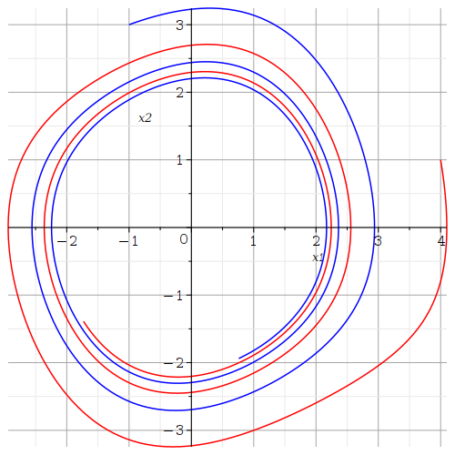
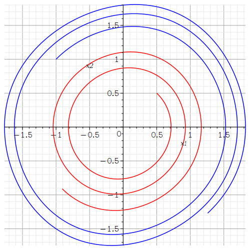
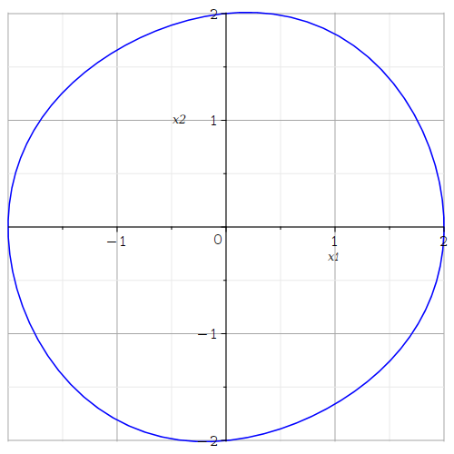
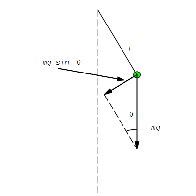
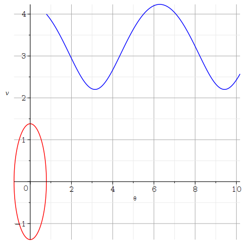
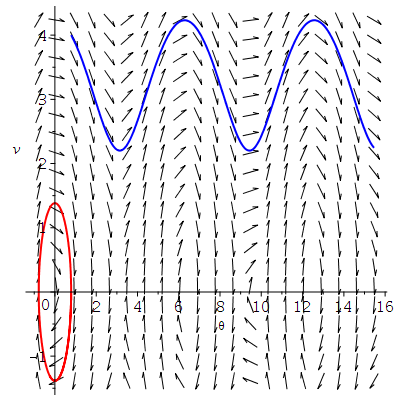
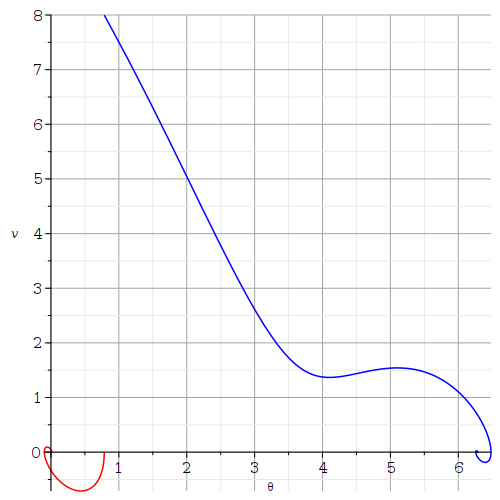
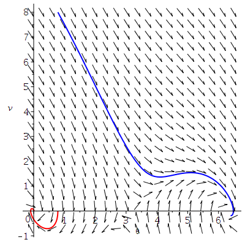
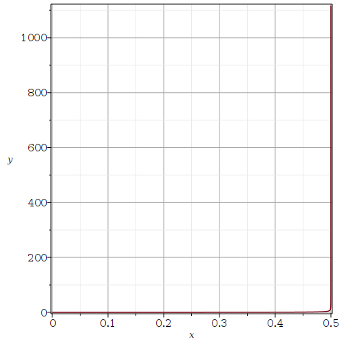
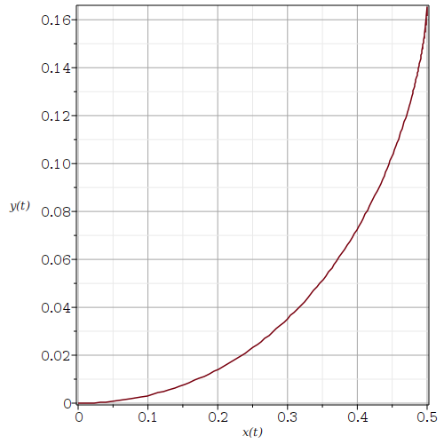

Systems of nonlinear ODE
This is the second part of our introduction to the use of Maple to study systems of ODE. We covered the systems of linear ODE in the first document . We assume that the reader has read that document first.
Systems of Nonlinear Autonomous ODE
There are no general methods to solve systems of nonlinear autonomous ODE. We often have no other choice than to do a qualitative study of the system and/or to solve the system numerically.
Van der Pol Equation
Consider the system of first order ODE associated to the Van der Pol equation \(\displaystyle x''(t)+ \epsilon x'(t) (x^2(t)-1) + x(t) = 0\).
> restart: with(plots):
eq2 := { diff(x1(t),t) = x2(t), diff(x2(t),t) = -epsilon*x2(t)*(x1(t)^2-1)-x1(t)};
\[
eq2 := \left\{ \frac{\text{d}}{\text{d}t} x1 = x2(t), \frac{\text{d}}{\text{d}t} x2(t) = -\epsilon x2(t) (x1(t)^2-1)-x1(t) \right\};
\]
This is a system of nonlinear ODE. We assume that \(\epsilon=0.1\).
> eq3 := subs(epsilon=0.1, eq2);\[ eq2 := \left\{ \frac{\text{d}}{\text{d}t} x1 = x2(t), \frac{\text{d}}{\text{d}t} x2(t) = -0.1 x2(t) (x1(t)^2-1)-x1(t) \right\}; \]
Since it is going to be instructive to plot the orbits associated to many initial conditions, we have written a Maple procedure to draw these orbits.
> graph := proc (a, b, T, clr)
local X;
X := dsolve(eq3 union {x1(0) = a, x2(0) = b}, [x1(t), x2(t)], type = numeric,
output = procedurelist, method = classical[rk4], stepsize = 0.1e-1):
RETURN(odeplot(X, [x1(t), x2(t)], 0 .. T, numpoints = floor(30*T), color = clr)):
end proc;
\[
\begin{split}
& graph := proc (a, b, T, clr)\\
& \qquad local\ X;\\
& \qquad X := dsolve(eq3\ union\ \{x1(0) = a, x2(0) = b\}, \{x1(t), x2(t)\}, type = numeric, output = procedurelist, \\
& \qquad \qquad method = classical[rk4], stepsize = 0.1e-1);\\
& \qquad RETURN(plots:-odeplot(X, [x1(t), x2(t)], 0 .. T, numpoints = floor(30*T), color = clr))\\
& end\ proc
\end{split}
\]
Note: We provide more information on creating Maple procedures in the document .
We now draw the orbits of the system of ODE associated to several initial conditions.
> gr1 := graph(4,1,5*Pi,"red"):
gr2 := graph(-1,3,5*Pi, "blue"):
display({gr1,gr2},axes=normal,labels=[`x1`,`x2`],gridlines=true);

> gr3:= graph(0.5,0.5,5*Pi,"red"):
gr4:= graph(-1,1,5*Pi,"blue"):
display({gr3,gr4},axes=normal,labels=[`x1`,`x2`],gridlines=true);

In the first figure, the orbits seem to spiral in a counterclockwise direction toward the origin. The easiest way to determine the direction of an orbit is probably to first locate the point associated to the initial condition. However, in a the second figure, the orbits seem to spiral in a counterclockwise direction away from the origin. This cannot go on forever because orbits cannot intersect and they varies smoothly with respect to initial conditions. What is going on?
We need to look at the vector field associated to this system of ODE. We also draw some orbits in the figure that contains the vector filed.
> with(DEtools):
DEplot(eq3, [x1(t), x2(t)], t = 0 .. 8*Pi,
[[x1(0) = .5, x2(0) = .5], [x1(0) = 2, x2(0) = 2]], linecolor = [blue, red],
thickness = 2, color = black, stepsize = 0.1e-1, arrows = small);

All the orbits seem to converge toward a periodic solution.
The orbit with the initial condition \((2,2)\) (outside the
periodic orbit) is getting very close to this periodic solution.
To sketch
this periodic orbit, we first select a point
\( (a,b) = (x_1(t),x_2(t)) \) with \(t\) very large on the orbit with the
initial condition \((2,2)\). This new initial condition
should therefore be closed to the periodic orbit. We draw the orbit
with the initial condition \( (a,b) \).
Since we are now using large values of \(t\), we need to use a more
efficient numerical method than the classical Runge-Kutta method.
We select an adaptive Runge-Kutta method that control the step size
of the integration.
> X1 := dsolve(eq3 union {x1(0) = 2, x2(0) = 2}, [x1(t), x2(t)], type = numeric,
output = procedurelist, method = rkf45):
a := subs(X1(20*Pi),x1(t));
b := subs(X1(20*Pi),x2(t));
X2 := dsolve(eq3 union {x1(0) = a, x2(0) = b}, [x1(t), x2(t)], type = numeric,
output = procedurelist, method = rkf45):
odeplot(X2, [x1(t), x2(t)], 0 .. 5*Pi, color = 'blue', gridlines=true,
labels=[`x1`,`x2`]);
\[
\begin{split}
& a := 1.31165172370504 \\
& b := 1.58727282677840
\end{split}
\]

In theory, the figure above does not contain the plot of the periodic orbit. But, since the orbit that we have drawn is so closed to the periodic orbit, they are visually indistinguishable. We admit that this is not a proof of the existence of a unique periodic orbit but this is certainly a good indication of its existence.
Note: We may also use the Maple function fieldplot() to plot vector fields since the right hand side of a system of ODE represents a vector field.
Nonlinear Pendulum
Consider the pendulum made up of a very light rod of length \(L\) with a small ball of mass \(m\) attached at one end of the rod as in the figure below.
> with(plots):with(plottools):
gr1:=line([0,0], [0,-14], color=black, linestyle=3):
gr2:=line([0,0], [3,-5], color=black):
gr3:=disk([3,-5], 0.25, color=green):
gr4:=arrow([3,-5], [1/2,-13/2], 0.02,0.3,0.2, color=black):
gr5:=line([1/2,-13/2], [3,-32/3], color=black, linestyle=3):
gr6:=arrow([3,-5], [3,-32/3], 0.02,0.3,0.1, color=black):
gr7:=textplot([4,-9,"mg"], font=[COURIER,12],align={LEFT}):
gr8:=textplot([-2,-4,"mg sin("], font=[COURIER,12],align={LEFT}):
gr9:=textplot([-1.8,-4,'q'], font=[SYMBOL,12],align={LEFT}):
gr10:=textplot([-1.6, -4, ")"], font = [COURIER, 12], align = {LEFT}):
gr11:=arc([3,-35/3],2.5, Pi/2..3*Pi/5):
gr12:=textplot([2.2,-8,'q'], font=[SYMBOL,12],align={RIGHT}):
gr13:=arrow([-3,-4.5],[2,-5.4], 0.02,0.3,0.1, color=black):
gr14:=textplot([2.1,-3,'L'], font=[COURIER,12],align={RIGHT}):
display({gr1,gr2,gr3,gr4,gr5,gr6,gr7,gr8,gr9,gr10,gr11,gr12,gr13,gr14},
view=[-6..6,-14..0.5], axes=none, scaling=constrained);

Using Newton law force equals mass times acceleration
,
we find that the angle θ is governed
by the ODE which is defined by the following command in Maple.
> eq4 := m*L*diff(theta(t),t$2) = -k*L*diff(theta(t),t) -m*g*sin(theta(t));\[ eq4 := m L \left( \frac{\text{d}^2}{\text{d}t^2} \theta(t) \right) = -k L \left(\frac{\text{d}}{\text{d}t} \theta(t) \right) - m g \sin(\theta(t)) \]
We have that g = 9.8 m/s2 is the acceleration due to gravity and k is a constant of proportionality between the force due to friction and the velocity. We can rewrite this ODE as a the system of ODE of order one.
> eq5:={ diff(theta(t),t)=v(t), diff(v(t),t)=-(k*g/m)*v(t) -(g/L)*sin(theta(t))};
\[
eq5 := \left\{ \frac{\text{d}}{\text{d}t} \theta(t) = v(t), \frac{\text{d}}{\text{d}t} v(t) = -\frac{k g v(t)}{m} - \frac{g \sin(\theta(t))}{L} \right\}
\]
In the formula above, v(t) is the angular velocity at time \(t\).
Ideal Pendulum
The ideal pendulum does not have friction; namely. k=0. We assume that L=3 m and m=0.5 kg. The mass does not matter if there is no friction.
> eq6 := subs({k=0, g=9.8, m=0.5, L=3}, eq5);
\[
eq6 := \left\{ \frac{\text{d}}{\text{d}t} \theta(t) = v(t), \frac{\text{d}}{\text{d}t} v(t) = -3.266666667 \sin(\theta(t)) \right\}
\]
We plan to plot the orbits for the following two situations:
- We let the pendulum loose from an angle of \(\pi/4\). Thus, θ(0)=π/4 and v(0)=0.
- We push the pendulum upward from an angle of \(\pi/4\) and with a velocity of \(4\) m/s. Thus, θ(0)= π/4 and v(0)=4 m/s.
Since we need to plot the orbits of the system of ODE of order one for several initial conditions, it is useful to reintroduce the procedure (after some small modifications) used before.
> graph := proc (a, b, T, clr)
local X:
X := dsolve(eq6 union {theta(0) = a, v(0) = b}, {theta(t), v(t)}, type = numeric,
output = procedurelist, method = classical[rk4], stepsize = 0.1e-1):
RETURN(odeplot(X, [theta(t), v(t)], 0 .. T, color = clr)):
end proc;
\[
\begin{split}
& graph := proc (a, b, T, clr)\\
& \qquad local\ X;\\
& \qquad X := dsolve(eq6\ union\ \{theta(0) = a, v(0) = b\},
\{theta(t), v(t)\}, type = numeric, output = procedurelist,\\
& \qquad \qquad method = classical[rk4], stepsize = 0.1e-1);\\
& \qquad RETURN(plots:-odeplot(X, [theta(t), v(t)], 0 .. T, color = clr))\\
& end\ proc
\end{split}
\]
The orbits of the two particular solutions are drawn in the following figure.
> pendul1 := graph(Pi/4,0,2*Pi,"red"):
pendul2 := graph(Pi/4,4,Pi,"blue"):
display({pendul1,pendul2}, axes=normal, labels=[`theta`,`v`],gridlines=true);

For the orbit in red, the pendulum oscillates from one side to the other for ever. For the orbit in blue, the pendulum go around for ever because our initial velocity was strong. Since there is no friction, the motion of the pendulum is perpetual.
We draw in the same figure the vector field of the system of ODE of order one and the orbits of the two particular solutions above.
> with(DEtools):
DEplot(eq6,[theta(t),v(t)], t=0..1.5*Pi, [[theta(0)=Pi/4,v(0)=0], [theta(0)=Pi/4,v(0)=4]],
linecolor=[blue,black], thickness=2, color=green, stepsize=0.01, arrows=small);

Pendulum with Friction
This time, we do not ignore the friction. We assume that k=0.1. We keep the values L=3 m and m=0.5 kg.
> eq6 := subs({m=0.5, g=9.8, L=3, k=0.1},eq5);
\[
eq6 := \left\{ \frac{\text{d}}{\text{d}t} \theta(t) = v(t), \frac{\text{d}}{\text{d}t} v(t) = -1.960000000 v(t)-3.266666667 \sin(\theta(t)) \right\}
\]
Since we are using the same name eq6 to designate the new system of ODE of order one, the procedure graph() defined above is still valid in the present context.
As for the ideal pendulum, we consider two cases:
- We let the pendulum loose from an angle of \(\pi/4\). Thus, θ(0)=π/4 and v(0)=0.
- We push the pendulum upward from an angle of \(\pi/4\) with a velocity of \(8\) m/s. Thus, θ(0)= π/4 and v(0)=8 m/s.
The orbits of this two particular solutions are draw in the following figure.
> pendul1:=graph(Pi/4,0,3*Pi,"red"):
pendul2:=graph(Pi/4,8,3*Pi, "blue"):
display({pendul1,pendul2}, axes=normal, labels=[`theta`,`v`],gridlines=true);

We draw in the same figure the vector field of the system of ODE of order one and the orbits of the two particular solutions above.
> DEplot(eq6,[theta(t),v(t)], t=0..1.3*Pi, [[theta(0)=Pi/4,v(0)=0], [theta(0)=Pi/4,v(0)=8]], linecolor=[red,blue], thickness=2, color=black, stepsize=0.01, arrows=small);

For the orbit in red, the oscillation of the pendulum is dying down. For the orbit in blue, after a complete rotation, the pendulum starts to oscillate and its oscillation is also dying down.
Systems of Nonlinear Non-Autonomous ODE
The analysis of systems of nonlinear non-autonomous ODE is more complex than the anaylsis of systems of nonlinear autonomous ODE. In particular, the system of ODE \(\vec{x}'= f(t,\vec{x})\) does not define a vector field because the right hand side depends explicitly of \(t\). We will only give one example to illustrate how Maple can still be used to study such systems of ODE.
Example: A friendly dog is running after a person. The dog starts running from the origin when the person crosses the \(x\) axis as illustrated in the figure below.

The person walks in a straight line at a speed of \(v\) km/h. The direction of the dog is always toward the person. Moreover, the dog runs at a constant speed of \(v_d\) km/h. The position of the dog is described by differential equations that we are going to deduce below.
First Method: Since the dog is always running toward the person, we have that
\[ \begin{equation} \label{Equ1} \frac{\text{d}y}{\text{d}x} = \frac{y-v t}{x-a} \ . \end{equation} \]Since the speed \(v_d\) at which the dog run is constant, we also have that
\[ \begin{equation} \label{Equ2} v_d = \left( \left( \frac{\text{d}x}{\text{d}t} \right)^2 + \left( \frac{\text{d}y}{\text{d}t} \right)^2 \right)^{1/2} = \frac{\text{d}x}{\text{d}t} \left( 1 + \left( \frac{\text{d}y}{\text{d}x} \right)^2 \right)^{1/2} \ , \end{equation} \]where we have deduced from the figure above that the derivatives of \(x\) and \(y\) with respect to \(t\) are positive. If we derive the equation \(\displaystyle (x-a) \frac{\text{d}y}{\text{d}x} = y-v t\) with respect to \(t\), then we get
\[ (x-a) \frac{\text{d}^2y}{\text{d}x^2} \frac{\text{d}x}{\text{d}t} + \frac{\text{d}y}{\text{d}x} \frac{\text{d}x}{\text{d}t} = (x-a) \frac{\text{d}^2y}{\text{d}x^2} \frac{\text{d}x}{\text{d}t} + \frac{\text{d}y}{\text{d}t} = \frac{\text{d}y}{\text{d}t} - v \ . \]Thus
\[ (x-a) \frac{\text{d}^2y}{\text{d}x^2} = -v\, \left(\frac{\text{d}x}{\text{d}t}\right)^{-1} = -\frac{v}{v_d} \left( 1 + \left( \frac{\text{d}y}{\text{d}x} \right)^2 \right)^{1/2} \ . \]This is not the type of second order ODE that we can solve with the usual techniques taught in courses on ODE. In particular, this is a nonlinear ODE. We will therefore solve it numerically. We assume that \(a= 0.5\) km, \(v = 3\) kn/h and \(v_d = 10\) km/h. We draw the graph of \(y\) in fonction of \(x\).
> restart: with(plots):
equ := vd*(a-x)*diff(y(x),x$2) = v*(1 + ( diff(y(x),x))^2)^(1/2);
equP := subs({a=0.5, v=3, vd=10},equ);
solP := dsolve({equP, y(0)=0, D(y)(0)=0},y(x),type=numeric,output=procedurelist,
method=rkf45, range=0..0.499);
odeplot(solP, 0..0.499,axes=BOXED,labels=[`x`,`y`],refine=2,gridlines=true);
\[
\begin{split}
& equ := vd\,(a - x) \left( \frac{\text{d}^2}{\text{d}x^2} y(x)\right)
= v\,\sqrt{1 + \left(\frac{\text{d}}{\text{d} x} y(x) \right)^2} \\
& equP := 10\,(0.5 - x) \left( \frac{\text{d}^2}{\text{d}x^2} y(x)\right)
= 3\,\sqrt{1 + \left(\frac{\text{d}}{\text{d} x} y(x) \right)^2} \\
& solP := \text{proc(x\_rkf45) \ldots end proc}
\end{split}
\]

We integrate the ODE up to \(x = 0.499 < 0.5\) because \(\displaystyle \frac{\text{d}}{\text{d} x} y(x) \to \infty\) as \(x \to 0.5\). In theory, the dog catches up with the person when \(x =0.5\) km. If we solve the ODE over the interval \([0,0.4999999]\), then we get basically the same figure than the one above. Thus, we may assume that \(y \approx 0.162\) km when the dog reaches the person.
What happen if we have a very small dog or a lazy dog that runs only at \(2\) km/h? We now have that \(a= 0.5\) km, \(v = 3\) kn/h and \(v_d = 2\) km/h. We draw the graph of \(y\) in function of \(x\).
> equP := subs({a=0.5, v=3, vd=2},equ);
solP := dsolve({equP, y(0)=0, D(y)(0)=0},y(x),type=numeric,output=procedurelist,
method=rkf45, range=0..0.499):
odeplot(solP, 0..0.499,axes=BOXED,labels=[`x`,`y`],refine=2,gridlines=true);
\[
equP := 2\,(0.5 - x) \left( \frac{\text{d}^2}{\text{d}x^2} y(x)\right)
= 3\,\sqrt{1 + \left(\frac{\text{d}}{\text{d} x} y(x) \right)^2}
\]

If we solve the ODE over the interval \([0,0.4999999]\), then we get figure below.
> solP := dsolve({equP, y(0)=0, D(y)(0)=0},y(x),type=numeric,output=procedurelist,
method=rkf45, range=0..0.4999999):
odeplot(solP, 0..0.4999999,axes=BOXED,labels=[`x`,`y`],refine=2,gridlines=true);

The poor dog is still running after the person after more than \(1100\) km. In this case, the dog will never reach the person if we assume that this person is going to walk at the same speed for ever.
Second Method: The previous method has a flaw. It completely ignores the time. In particular, if the speeds of the person and the dog were varying in time, we would not be able to determine how long it takes for the dog to reach the person. We will therefore deduce a system of ODE that describe the position of the dog in function of the time. Our deduction will still be based on the relations \eqref{Equ1} and \eqref{Equ2} above.
We get from \eqref{Equ1} that
\[ \begin{equation} \label{Equ3} \frac{\text{d}y}{\text{d}t} = \frac{y-v t}{x-a} \, \frac{\text{d}x}{\text{d}t} \ . \end{equation} \]If we substitute \eqref{Equ3} into \eqref{Equ2}, then we get
\[ \frac{\text{d}x}{\text{d}t} = v_d \left( 1 + \left( \frac{y-vt}{x-a}\right)^2\right)^{-1/2} = \frac{ v_d (a - x) }{ \sqrt{(x-a)^2 + (y-vt)^2}} \ . \]Since we assume that \(x < a\), we have used \( \sqrt{(x-a)^2} = a - x\). If we substitute this expression back into \eqref{Equ3}, then we get
\[ \frac{\text{d}y}{\text{d}t} = \frac{ v_d (y-v t) }{ \sqrt{(x-a)^2 + (y-vt)^2}} \ . \]We thus have the following system of ODE.
> eq1 := diff(x(t),t) = vd*(a -x(t))/sqrt((x(t)-a)^2+(y(t)-v*t)^2);
eq2 := diff(y(t),t) = vd*(v*t - y(t))/sqrt((x(t)-a)^2 +(y(t)-v*t)^2);
eq := {eq1, eq2, x(0) = 0, y(0) = 0 };
\[
\begin{split}
& eq := \bigg\{\frac{d}{d t}x (t) = \frac{vd \left(a -x(t)\right)}
{\sqrt{\left(x(t)-a \right)^{2}+\left(y(t)-v t \right)^{2}}},
\frac{d}{d t}y (t) = \frac{vd \left(v t -y(t)\right)}
{\sqrt{\left(x(t)-a \right)^{2}+\left(y(t)-v t \right)^{2}}},\\
& x(0) = 0,y(0) = 0\bigg\}
\end{split}
\]
As we did previously, we assume that \(a= 0.5\) km, \(v = 3\) kn/h and \(v_d = 10\) km/h. We draw the orbit \( \{ (x(t),y(t)): 0 \leq t \leq 0.1 \} \) that represents the position of the dog as \(t\) increases.
> eqP := subs({a=0.5,v=3,vd=10}, eq);
solP := dsolve(eqP, [x(t),y(t)], type=numeric, method = rkf45,
output =procedurelist, range=0..0.0551):
odeplot(solP,[x(t),y(t)],t=0..0.0551,labels=[`x(t)`,`y(t)`],
axes=BOXED,refine=2,gridlines=true);
\[
\begin{split}
& eq := \bigg\{\frac{d}{d t}x (t) = \frac{10 \left(0.5 -x(t)\right)}
{\sqrt{\left(x(t)- 0.5 \right)^{2}+\left(y(t)-3 t \right)^{2}}},
\frac{d}{d t}y (t) = \frac{10 \left(3 t -y(t)\right)}
{\sqrt{\left(x(t)- 0.5 \right)^{2}+\left(y(t)- 3 t \right)^{2}}},\\
& x(0) = 0,y(0) = 0\bigg\}
\end{split}
\]

If we try to integrate for \( t > 0.055\ldots \), then Maple displays the following message.
\[ \text{Warning, cannot evaluate the solution further right of .55107367e-1, maxfun limit exceeded (see ?dsolve,maxfun for details)} \]The problem is that \(x(t),y(t)) \to (0.5, 0.165\ldots )\) as \( t \to 0.055\ldots \). The ODE is not defined for \( (t,x,y) \approx (0.0551, 0.5, 0.1653)\). This is the time and location when the dog reaches the person. So, the dog takes about 3 minutes and 18 secondes to reach the person.